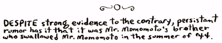

|
Questions
Have a friendly class talk. Permit each child to tell any part of the unit
on "Courtesy in the Corridors and on the Stairs" that he enjoyed. Name some
causes of disturbance in your school.
Chapter 1, THE EPISTLE TO THE PARANOIDS
--Lord Omar
1. Ye have locked yerselves up in cages of fear--and, behold, do ye now complain that ye lack FREEDOM!
2. Ye have cast out yer kinfolk for devils and now complain ye, lamenting that ye've been left to fight alone.
3. All Chaos was once yer kingdom; verily, held ye dominion over the entire Pentaverse, but today ye was sore afraid in dark corners, nooks, and sink holes.
4. O how the darknesses do crowd up, one against the other, in ye hearts! What fear ye more that what ye have wroughten?
5. Verily, verily I say unto you, not all the Sinister Ministers of the Bavarian Illuminati, working together in multitudes, could so entwine the land with tribulation as have yer baseless warnings.

|